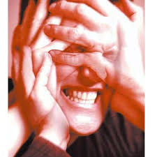
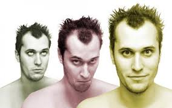
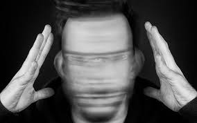
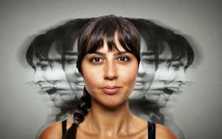
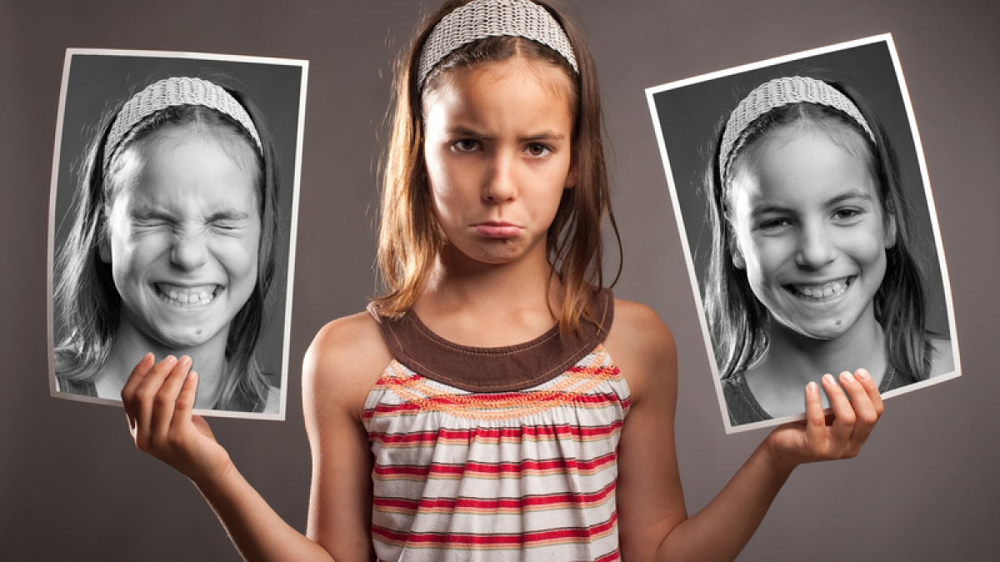

TIPOS DE ESQUIZOFRENIA
| TIPO | DESCRIPCION | IMAGEN |
|---|
| Esquizofrenia Paranoide |
se caracteriza por precaucion excesiva por una o mas ideas delirantes de aluciones auditivas frecuentes(oyen voces).
Se caracteriza por lesiones graves a uno mismo y a los demas, alteraciones de la personalidad;es comun entre los 30 y 35 años.
Las ideas mas frecuentes de las alucinaciones son ideas de persecusion, voces dando ordenes (silbidos, risas o murmullos), alucinaciones olfatorias, gustatorias, sexuales o de otro tipo.
FUENTE:http://scielo.sld.cu/scielo.php?script=sci_arttext&pid=S1684-18242018000400022#:~:text=Esquizofrenia%20paranoide%3A%20es%20el%20tipo,de%20perturbaciones%20de%20la%20percepci%C3%B3n. |
 |
| TIPO | DESCRIPCION | IMAGEN |
|---|
| Esquizofrenia Hebefrenica o desorganizada |
Se caracteriza porque el lenguaje y el comportamiento se ven alterados, no parecen tener orden ni responder a los estimulos externos de manera adecuada.
Comienza antes de los 25 años y los antecentes familiares de depresion o psicosis aumentan la probabilidad de padecerlo
Las caracteristicas asociadas incluyen muecas,manierismos y otras rarezas del comportamiento.
FUENTE:https://www.esquizofrenia24x7.com/sobre-esquizofrenia/tipos-de-esquizofrenia |
 |
| TIPO | DESCRIPCION | IMAGEN |
|---|
| Esquizofrenia Catatonica |
se caracteriza por presentar unaalteracion psicomotora entre ellas inmovilidad llamada catalepsia, adopcion de posturas extrañas, actividad motora excesiva, negativismo extremo.
Kahlbaum, describio el sindrome en 1868 cuando observo pacientes que padecian una condicion de profunda melancolia.
La actividad motora excesiva carece de proposito y no esta influida por estimulos externos.
FUENTE:https://www.esquizofrenia24x7.com/sobre-esquizofrenia/tipos-de-esquizofrenia. |
 |
| TIPO | DESCRIPCION | IMAGEN |
|---|
| Esquizofrenia Indiferenciada |
se caracteriza en la cual presenta sintomas anteriormente descritos pero sin que estos puedan en su conjunto permitir clasificarla.
FUENTE:https://www.esquizofrenia24x7.com/sobre-esquizofrenia/tipos-de-esquizofrenia |
 |
| TIPO | DESCRIPCION | IMAGEN |
|---|
| Esquizofrenia Residual o Simple |
No se dan ideas delirantes, alucinaciones, catatonia,ni desorganizacion del lenguaje o comportamiento.
Solo se dan manifestaciones leves de sintomas tanto positivos como negativos pero de menor magnitud (creencias extrañas, experiencias pcoo habituales).
Todos estos sintomas empeoran la actividad laboral o academica y alteraciones en las relaciones personales.
FUENTE:https://psicologosoviedo.com/especialidades/trastornos-psicoticos/tipos-esquizofrenia/ |
 |